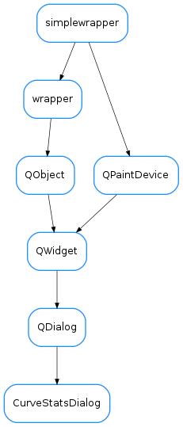

CurveStatsDialog¶

-
class
CurveStatsDialog(parent=None)[source]¶ Bases:
PyQt4.QtGui.QDialogA dialog for configuring and displaying statistics from curves of a plot
-
closed¶
-
getSelectedRows()[source]¶ returns a list of row numbers corresponding to the selected rows of the table
-
loadUi(filename=None, path=None)¶
-
onCalculate()[source]¶ slot called when the calculate button is pressed. Performs the calculation of stats in the current limits for the currently selected curves (or for all if none selected) and fills the table.
-
statColumns= ('points', 'min', 'max', 'mean', 'std', 'rms')¶
-